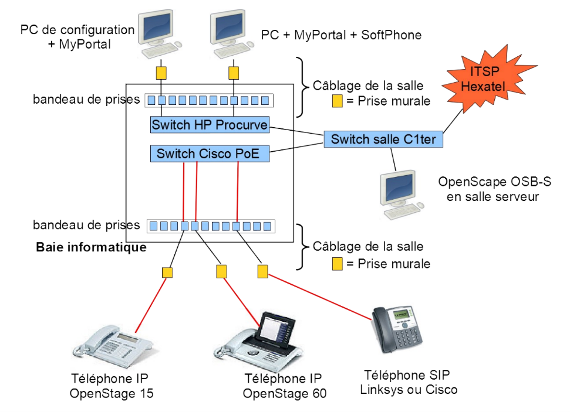
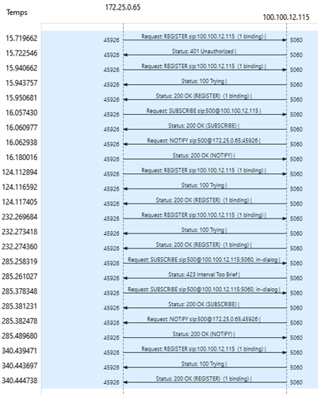
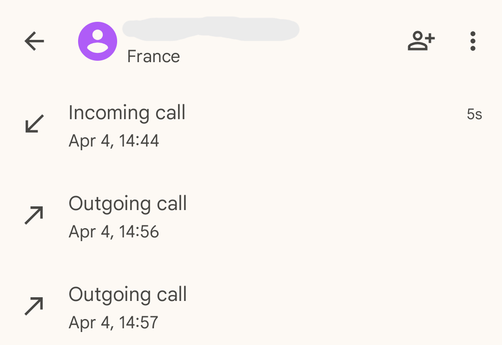

Ce projet a été réalisé lors de ma première année de BUT Réseaux & Télécommunications. L’objectif était de déployer une solution de téléphonie IP fonctionnelle, incluant la configuration d’un Call Server, de téléphones IP, et d’un softphone.
L’objectif était de configurer manuellement l’ensemble des éléments d’un réseau de téléphonie IP : création d’abonnés, affectation des SDA, configuration des postes téléphoniques, mise en place d’un softphone et gestion des appels entrants/sortants. L’accent était mis sur la compréhension du fonctionnement du protocole SIP et sur la capacité à diagnostiquer le réseau à l’aide d’outils comme Wireshark.
Le projet s’est déroulé sur 9 heures réparties sur 3 séances de TP de 3 heures, réalisées principalement en autonomie et en groupe, avec la possibilité de demander de l’aide en cas de blocage. L’ensemble de la configuration a été faite manuellement, sans assistant automatique, afin de mieux comprendre le fonctionnement interne d’un système de téléphonie IP.
Nous avons commencé par restaurer la configuration du Call Server en accédant à son interface web via son adresse IP. Une fois la base de données restaurée, nous avons réalisé la topologie réseau nécessaire, en tenant compte du fait que les téléphones fonctionnent en PoE et n’ont donc pas besoin d’alimentation externe.
Ensuite, nous avons créé les abonnés dans l’interface d’administration du Call Server. Nous avons ensuite configuré deux téléphones IP (OpenStage 60 et 15) en les réinitialisant, puis en accédant à leur interface de configuration. L’un des téléphones étant défectueux, nous avons poursuivi les manipulations principalement avec le modèle fonctionnel.
Une fois les téléphones configurés, nous avons procédé à la mise en place d’un softphone à l’aide du logiciel Xlite. Pour cela, nous avons récupéré les identifiants SIP d’un abonné et les avons renseignés dans le logiciel, ce qui nous a permis de recevoir et d’émettre des appels depuis un poste logiciel.
Nous avons analysé le fonctionnement du protocole SIP à l’aide de captures de trames sur Wireshark. Cela nous a permis de mieux comprendre en détail les étapes d’un appel (REGISTER, INVITE, RINGING, OK…) ainsi que d’expérimenter la création de groupes d’appel (cyclique, linéaire, simultané), la mise en place de renvois d’appel, et l’utilisation de la messagerie vocale via l’application MyPortal.
Pour compléter l’infrastructure, nous avons également activé un trunk SIP afin de permettre les appels vers l’extérieur, en suivant une procédure fournie.
L’ensemble de la configuration a bien fonctionné : les téléphones étaient opérationnels, et les appels passaient correctement, aussi bien en interne qu’avec le softphone. Grâce à ce projet, j’ai pu mieux comprendre le fonctionnement global d’un système de téléphonie IP, notamment le rôle du Call Server, la configuration des abonnés et le protocole SIP. Ce travail m’a également bien préparé pour le contrôle réalisé à la fin du module, mais je n’ai malheureusement pas encore reçu la note.